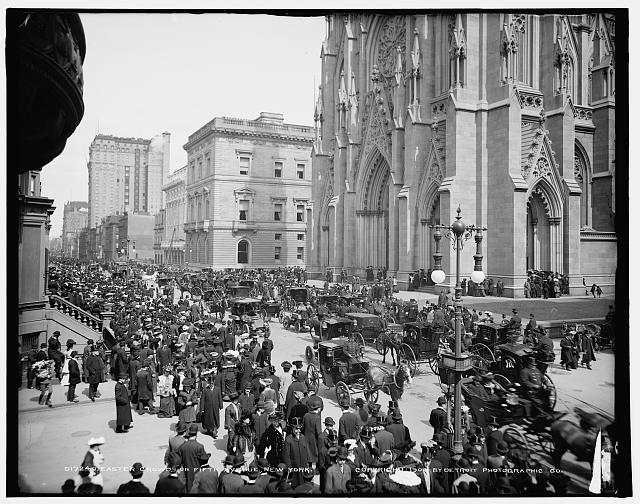

Marchers
Marchers carrying banner lead way as 15,000 parade in Harlem
Photograph shows marchers carrying banner "We march with Selma!" on street in Harlem, New York City, New York. view at LOC
New York has hosted crowds for many occasions over the years. Below are a few, from the historic to the everyday.
article.crowd>p.crowd__image>img^+p.crowd__type+h3.crowd__title+p.crowd__meta+p.crowd__textMarchers
Photograph shows marchers carrying banner "We march with Selma!" on street in Harlem, New York City, New York. view at LOC
Marchers
Women did not get the right to vote until 1920 in the US. The Suffragist movement was key in winning that right. view at LOC

Social Gathering
During the holidays New York has always been crowded. view at LOC
Rally
D-day was the day that Allied forces entered France at the beaches of Normandy in World War II. The people in the crowd here in New York City are showing their support. view at LOC
Social Gathering
People in the stadium for the first game of the World Series in the Polo Grounds. The Polo Grounds is where the New York Yankees used to play baseball. view at LOC

Business
People working on the trading floor of the New York Stock Exchange. view at LOC